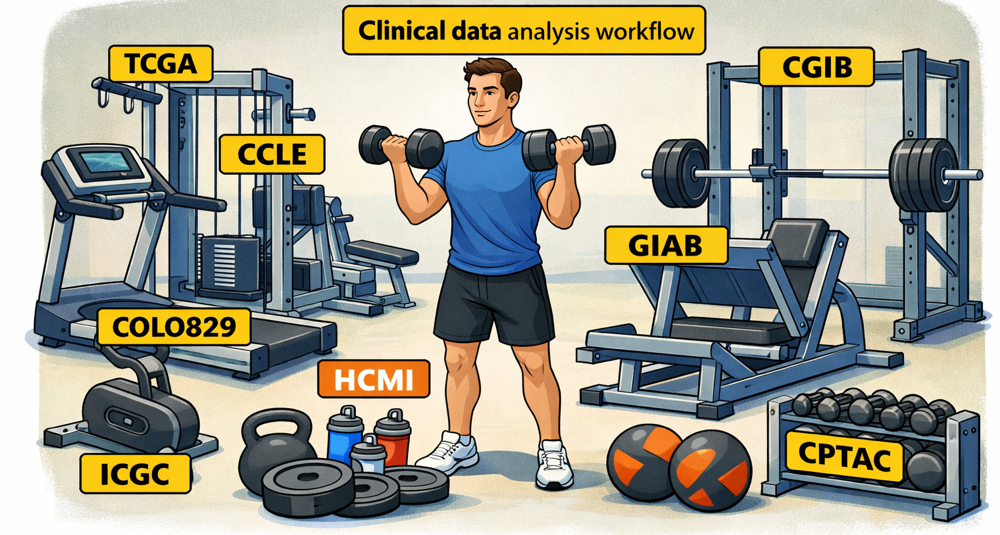

1. GoldStand Dataset Framework#
{kind=link}

1.1. Purpose#
GoldStand is the dataset foundation of the ClinDet benchmark gym. Its goal is not only to collect public omics datasets, but to organize them into a reusable framework for validating workflow capability, testing regression across versions, and comparing analytical methods under realistic clinical genomics scenarios.
In this framework, datasets act as training equipment in a gym. Each dataset should support one or more clearly defined analytical tasks, such as somatic SNV calling, fusion detection, CNV recovery, or expression quantification. The emphasis is therefore task-oriented rather than dataset-oriented.
1.2. What GoldStand should support#
GoldStand is intended to cover the major omics modalities currently used in clinical molecular analysis:
Whole exome sequencing (WES)
Whole genome sequencing (WGS)
RNA sequencing (RNA-seq)
And it should support the most important analytical targets:
SNV / Indel detection
Structural variant detection
Copy number analysis
Gene fusion detection
Expression quantification
Immune repertoire and other transcriptome-derived features
1.3. Design principles#
The GoldStand collection should follow a small number of consistent design principles:
Capability-driven organization. Datasets should be mapped to concrete workflow capabilities rather than stored as an unstructured resource list.
Explicit truth annotation. Each dataset should record whether it provides high-confidence truth, partial validation, consensus calls, synthetic spike-ins, or only exploratory biological expectation.
Multi-level testing. The same capability should ideally be represented by smoke-test datasets, standard benchmark datasets, and advanced or stress-test datasets.
Reproducible preprocessing. Input layout, sample metadata, and expected outputs should be standardized whenever possible.
Practical usability. Access restrictions, data size, and compute burden should be clearly stated so users can choose datasets appropriate for local testing, HPC testing, or method benchmarking.
1.4. Benchmark levels#
To make the benchmark gym easier to use, GoldStand should classify datasets into four test levels:
1.4.1. Smoke#
Small or lightweight datasets used to verify that a workflow can run end to end and generate expected output files.
1.4.2. Standard#
Datasets used for routine functional validation of one or more major workflow capabilities.
1.4.3. Gold#
Datasets with strong truth resources or strong consensus references, suitable for precision/recall evaluation and regression testing across workflow versions.
1.4.4. Stress#
Large, complex, noisy, non-human, low-VAF, or access-controlled datasets used to challenge workflow robustness and edge-case behavior.
1.5. How to use this catalog#
GoldStand should be used from the perspective of workflow validation rather than raw data collection:
Define the capability to test.
Choose an appropriate benchmark level.
Select one or more datasets with suitable truth strength and access conditions.
Define expected outputs and evaluation metrics before running the workflow.
Record caveats, failures, and interpretation limits together with the dataset entry.
1.6. Capability coverage#
The table below defines the intended scope of the benchmark gym.
| Capability | Omics Type | Typical Outputs | Truth Type | Suggested Test Level |
|---|---|---|---|---|
| Somatic SNV / Indel calling | WES, WGS | VCF, MAF | Consensus, spike-in, validated subset | Standard, Gold |
| Germline SNV / Indel calling | WES, WGS | VCF | High-confidence reference | Gold |
| Copy number analysis | WES, WGS | segment files, purity/ploidy, plots | Partial, consensus, orthogonal assay | Standard, Gold |
| Structural variant detection | WGS | SV VCF, merged breakpoint set | Consensus, curated set | Standard, Gold, Stress |
| Fusion detection | RNA-seq | fusion TSV, supporting reads | Partial, orthogonal validation | Standard |
| Expression quantification | RNA-seq | counts, TPM, abundance tables | Relative expectation, orthogonal assay | Smoke, Standard |
| Immune repertoire analysis | RNA-seq | clonotype reports | Biological expectation, partial validation | Standard |
| Non-human workflow adaptation | WGS, RNA-seq | modality-specific outputs | Variable, often partial | Stress |
1.7. Core dataset families#
The current GoldStand scope includes the following important dataset families.
| Dataset Family | Main Use | Truth Strength | Access | Notes |
|---|---|---|---|---|
| TCGA | WES/RNA cohort-level validation | Partial | Controlled | Broad coverage, not strict truth |
| ICGC / PCAWG | WGS somatic benchmarking | Curated / consensus | Controlled | Strong for SV/CNV-oriented testing |
| GIAB | Germline benchmarking | High-confidence | Open | Best for germline precision/recall |
| Cancer Genome in a Bottle | Tumor-normal benchmarking | High-confidence subset | Open | Useful bridge between germline and somatic validation |
| SEQC2 / MAQC | Spike-in and low-VAF benchmarking | Known truth | Open | Useful for sensitivity testing |
| CCLE | Cell-line benchmarking | Partial | Open | Good for reproducibility and RNA/CNV tasks |
| COLO829 | Benchmark-like tumor-normal model | Partial to strong, task-dependent | Open | Strong WGS/WES/SV use case |
| BostonGene reference standards | Practical somatic workflow validation | Partial | Open | Useful for workflow regression |
| Synthetic datasets | Controlled edge-case testing | Exact truth | Open | Best for simulation and failure analysis |
1.8. Recommended document structure#
GoldStand works best when the documentation is split into two layers:
dataset.mdThis file serves as the programmatic and conceptual entry point for the benchmark gym.capability-driven matrices Separate documents, such as
wes.md, should map datasets to concrete workflow tasks, expected outputs, and benchmark use cases.
1.9. Dataset metadata schema#
Every dataset entry in GoldStand should follow a consistent metadata schema so that the collection remains searchable and reusable.
Dataset Name:
Dataset Family:
Omics Type:
Biological Context:
Sample Type:
Supported Tasks:
Expected Outputs:
Truth Strength:
Truth Source:
Benchmark Level:
Typical Data Size:
Matched Normal:
Access Type:
Download Link:
License:
Known Caveats:
Recommended Usage:
Contributor:
Last Updated:
1.10. Curation rules#
When adding a new dataset, contributors should document:
Which workflow capability this dataset is meant to test.
Whether the dataset is suitable for smoke, standard, gold, or stress testing.
What outputs should be inspected after a successful run.
What truth resource or biological expectation justifies its use.
What practical limitations users should know before trying to run it.
1.11. Next step#
After defining the GoldStand framework in this document, the next layer should be a capability-driven benchmark matrix that links concrete tasks to specific datasets, expected outputs, and recommended evaluation focus.